<section class="law-panel" id="panel-third">
<div class="reading-column">

  <div class="article-header">
    <h2>Kepler&rsquo;s Third Law: Derivation</h2>
    <p class="lede">Abir Mehta</p>
  </div>

  <section class="section">
    <h3 class="section-heading">1. What is Kepler&rsquo;s 3rd Law?</h3>

    <p>Okay, last one! Kepler&rsquo;s 3rd Law states that the square of a planet&rsquo;s orbital period $T$ is proportional to the cube of its semi-major axis $a$:</p>
    <div class="equation">$$T^2 \propto a^3.$$</div>

    <p>If the term &ldquo;semi-major axis&rdquo; is unfamiliar, no worries&mdash;you can find a full breakdown of what $a$ means over on the <a class="inline-go" data-go="toolkit" data-anchor="sec-ellipses">Vectors &amp; Ellipses</a> tab. For a circular orbit, though, it&rsquo;s nothing complicated: $a$ is just the radius!</p>

    <p>So what does this law actually tell us? The farther a planet is from the Sun, the longer its orbital period&mdash;that part you could probably guess. But the period doesn&rsquo;t grow proportionally with distance. Push a planet out to twice the orbital size and its period doesn&rsquo;t just double, it stretches by a factor of $2\sqrt{2} \approx 2.83$! Kepler uncovered this pattern by poring over Brahe&rsquo;s data, and now we get to derive it ourselves from Newton&rsquo;s mechanics. Pretty cool, right?</p>

    <p>We&rsquo;ll derive it for the simplest case: a perfectly circular orbit, where the semi-major axis $a$ is just the radius $r$. The same result holds for elliptical orbits too, but proving that needs the full orbit equation, which is a bit beyond our scope here.</p>
  </section>

  <section class="section">
    <h3 class="section-heading">2. Deriving Kepler&rsquo;s 3rd Law</h3>

    <h4 class="subheading">2.1 The Setup</h4>

    <p>Our setup is similar to the 2nd Law: a large mass $M$ fixed at the origin, with a small mass $m$ orbiting around it. The only difference this time is that $m$ moves along a circular orbit of radius $r$.</p>

    <figure id="fig-third-1">
      
      <figcaption><span class="label">Fig. 1</span>Setup for the 3rd Law: mass $m$ orbits $M$ in a circle of radius $r$.</figcaption>
    </figure>

    <p>Gravity is still the only force acting on $m$, and we know its magnitude:</p>
    <div class="equation">$$F_g = \frac{GMm}{r^2}.$$</div>
    <p>Now, for a circular orbit, gravity always points directly toward the center&mdash;and that&rsquo;s exactly the direction you need to keep something moving in a circle! In other words, gravity supplies the centripetal force that keeps the planet in its orbit. That&rsquo;s the fact we&rsquo;ll build the derivation on.</p>
  </section>

  <!-- ===== DERIVATION CAROUSEL ===== -->
  <div class="derivation" data-carousel="d3">
    <div class="derivation-head">
      <span class="derivation-eyebrow">Derivation &middot; one step at a time</span>
      <div class="carousel-nav">
        <button class="carousel-arrow carousel-prev" data-prev="d3" aria-label="Previous step">&larr;</button>
        <div class="carousel-dots" data-dots="d3"></div>
        <span class="carousel-counter" data-counter="d3"></span>
        <button class="carousel-arrow carousel-next" data-next="d3" aria-label="Next step">&rarr;</button>
      </div>
    </div>
    <div class="carousel-track" data-track="d3">

      <!-- STEP 1 -->
      <div class="step-slide active">
        <div class="step">
          <div class="step-label">Step 1: Gravity as the Centripetal Force</div>
          <p class="step-prompt">Since gravity is the only force acting on $m$ and it points straight at the center, it must be the centripetal force holding $m$ in its circular orbit. Using what you know about uniform circular motion, set gravity equal to the centripetal force. What do you get?</p>

          <div class="hint-controls">
            <button class="hint-btn" data-step="3-1">Reveal next hint <span class="arrow">&rarr;</span></button>
            <span class="hint-progress" data-progress="3-1">0 / 4</span>
            <button class="hint-reset" data-reset="3-1">reset</button>
          </div>
          <div class="solution-meter">
            <div class="solution-track"><div class="solution-fill" data-meter="3-1"></div></div>
            <span class="solution-pct-label" data-meterlabel="3-1">0% of the solution revealed</span>
          </div>

          <div class="hints-container" data-hints="3-1">
            <div class="hint" data-pct="25"><div class="hint-head"><span class="hint-label">Hint 1: Step 1</span><span class="hint-pct">&#8776;25%</span></div>
              <p>Quick refresher from circular motion: to keep a mass $m$ moving in a circle of radius $r$ at speed $v$, you need a centripetal force $F_c = \dfrac{mv^2}{r}$.</p>
            </div>
            <div class="hint" data-pct="60"><div class="hint-head"><span class="hint-label">Hint 2: Step 1</span><span class="hint-pct">&#8776;60%</span></div>
              <p>Now just set the gravitational force equal to the centripetal force:</p>
              <div class="equation">$$\frac{GMm}{r^2} = \frac{mv^2}{r}.$$</div>
            </div>
            <div class="hint" data-pct="85"><div class="hint-head"><span class="hint-label">Hint 3: Step 1</span><span class="hint-pct">&#8776;85%</span></div>
              <p>Notice that there&rsquo;s an $m$ on both sides&mdash;so it cancels! (Neat side effect: the orbit doesn&rsquo;t depend on the planet&rsquo;s mass at all, only on $M$.) Cancel the $m$ and multiply both sides by $r$.</p>
            </div>
            <div class="hint answer" data-pct="100"><div class="hint-head"><span class="hint-label">Answer</span><span class="hint-pct">100%</span></div>
              <p>After simplifying, you should have</p>
              <div class="equation">$$\frac{GM}{r} = v^2.$$</div>
            </div>
          </div>
        </div>
      </div>

      <!-- STEP 2 -->
      <div class="step-slide">
        <div class="step">
          <div class="step-label">Step 2: Get rid of the speed</div>
          <p class="step-prompt">Nice! But that result still has $v$ in it, and Kepler&rsquo;s law is about the period $T$, not the speed. So let&rsquo;s get rid of $v$. Think about it: in one full period $T$, the planet travels exactly once around the circle. Can you write $v$ in terms of $r$ and $T$?</p>

          <div class="hint-controls">
            <button class="hint-btn" data-step="3-2">Reveal next hint <span class="arrow">&rarr;</span></button>
            <span class="hint-progress" data-progress="3-2">0 / 3</span>
            <button class="hint-reset" data-reset="3-2">reset</button>
          </div>
          <div class="solution-meter">
            <div class="solution-track"><div class="solution-fill" data-meter="3-2"></div></div>
            <span class="solution-pct-label" data-meterlabel="3-2">0% of the solution revealed</span>
          </div>

          <div class="hints-container" data-hints="3-2">
            <div class="hint" data-pct="30"><div class="hint-head"><span class="hint-label">Hint 1: Step 2</span><span class="hint-pct">&#8776;30%</span></div>
              <p>How far does the planet travel in one full orbit? And how long does that take?</p>
            </div>
            <div class="hint" data-pct="75"><div class="hint-head"><span class="hint-label">Hint 2: Step 2</span><span class="hint-pct">&#8776;75%</span></div>
              <p>In one period, the planet covers the circumference $2\pi r$ in a time $T$, so $v = \dfrac{2\pi r}{T}$. Substitute this into your result from Step 1!</p>
            </div>
            <div class="hint answer" data-pct="100"><div class="hint-head"><span class="hint-label">Answer</span><span class="hint-pct">100%</span></div>
              <p>Substituting and squaring, you should arrive at</p>
              <div class="equation">$$\frac{GM}{r} = \frac{4\pi^2 r^2}{T^2}.$$</div>
            </div>
          </div>
        </div>
      </div>

      <!-- STEP 3 -->
      <div class="step-slide">
        <div class="step">
          <div class="step-label">Step 3</div>
          <p class="step-prompt">Home stretch! Rearrange the equation from Step 2 to solve for $T^2$. Once it&rsquo;s isolated, take a good look&mdash;what&rsquo;s the relationship between $T$ and $r$? No hints for this one, you&rsquo;ve got it!</p>
        </div>
      </div>

    </div>
  </div>

  <section class="section">
    <h3 class="section-heading">3. Result</h3>
    <button class="reveal-result" data-reveal="r3">Reveal the result</button>
    <div class="result-hidden" data-revealtarget="r3" hidden>
      <p>You should arrive at</p>
      <div class="equation-boxed">$$\boxed{T^2 = \frac{4\pi^2}{GM} r^3.}$$</div>
      <p>And there it is&mdash;Kepler&rsquo;s 3rd Law, derived straight from Newton&rsquo;s law of gravitation! Notice the constant out front, $4\pi^2/(GM)$: it depends only on the central mass $M$, not on the orbiting planet. This means every planet orbiting the same Sun shares the same value of $T^2/r^3$. Kepler spotted this pattern just by studying Brahe&rsquo;s data; Newton&rsquo;s mechanics is what finally explains why it&rsquo;s true.</p>

      <div class="going-further">
        <span class="gf-label">Does this actually hold for ellipses?</span>
        <p>We pulled this off for a circle, where $a = r$. But real planets move on ellipses&mdash;so does the law survive? It does! All you do is trade the radius $r$ for the semi-major axis $a$, and it reads</p>
        <div class="equation">$$T^2 = \frac{4\pi^2}{GM} a^3,$$</div>
        <p>same constant out front, same $T^2 \propto a^3$. The honest catch is that nailing this down for a general ellipse takes the full orbit equation, which is more than we want to get into here. If you want to see the elliptical case worked all the way through, Taylor&rsquo;s <em>Classical Mechanics</em> (&sect;8.5&ndash;8.6) is a great place to look.</p>
      </div>
      <button class="result-reset" data-resultreset="r3">&#8634; Hide the result</button>
    </div>
  </section>

</div>
</section>